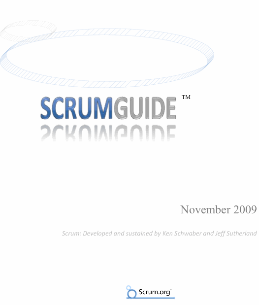

スクラムは、産業界で受け入れられたベストプラクティスに基づいている。それらは、数十年かけて使用され、実証されてきたものだ。後に経験プロセス理論の一部となっている。ある時、Jim CoplienがJeff Sutherlandに言った。「みんなスクラムが好きになるよ。追い詰められた時にいつもやってることなんだから」
スクラムに貢献してくれた非常に多くの人たちのなかから、最初の10年間に貢献してくれた人を選んでいこう。まず、Jeff SutherlandとJeff Mckenna。それから、Ken SchwaberとMike SmithとChris Martinだ。スクラムは、公式には OOPSLA 1995 で発表された。次の5年間では、Mike BeadleとMartine Devosが大きな貢献をしてくれた。そして、その他のみなさん。みなさんの助けがなければ、今のように洗練されたスクラムはなかっただろう。
スクラムの歴史は、ソフトウェア開発の世界だと、すでに長い部類に入っていることだろう。まずお礼を述べたいのは、最初の試行錯誤の場である。Individual, Inc.、Fidelity Investments、IDX（現 GE Medical）に感謝したい。
スクラムは1990年代初頭から複雑なプロダクトの開発に使用されてきた。本稿では、スクラムをプロダクト開発に使用する方法を説明する。ただし、スクラムはプロセスや技術ではない。正しくは、様々なプロセスや技術を取り込むことのできるフレームワークである。スクラムの役割は、複雑なプロダクト開発が可能なフレームワークを提供することで、開発プラクティスの効果を相対的に浮き彫りにし、改善することである。
スクラムは「経験的プロセス制御」の理論を根拠としており、反復的で漸進的な手法を用いて、予測可能性を最適化し、リスクをコントロールする。経験的プロセス制御の実現は、3本の脚に支えられている。
透明性とは、成果に影響するプロセスの様子が、成果を管理する人の目に見えることを保証することである。また、目に見えるものは知られていなければならない。つまり、物事の完了とプロセスを検査する人が考える完了の定義は等しくなければならない。
プロセスの様子は、受け入れ難い変化をすぐ検知できるように、頻繁に検査しておかなければならない。ただし、検査によってプロセス自体が変更されてしまうことを考慮に入れておくこと。必要となる検査の頻度がプロセスの許容を超えてしまってはいけない。幸いなことに、これはソフトウェア開発には当てはまらないようだ。他にもプロセスに影響を与える要因としては、作業の成果を検査する人の技術や勤勉さなどがある。
検査結果を見て、プロセスに不備があり、成果となるプロダクトを受け入れられないと判断した場合、検査人はプロセスまたは成果物を調整しなければならない。調整はできるだけ早く行い、これ以上の逸脱は防がなければならない。
スクラムには検査と適応を行う場所が3つある。まず、デイリースクラムミーティングである。スプリントゴールに対する進捗を検査し、次の作業日の価値を最適化するように適応する。次に、スプリントレビューとスプリント計画ミーティングである。リリースゴールの進捗を検査し、次のスプリントの価値を最適化するように適応する。最後に、スプリントレトロスペクティブである。終了したスプリントを検査し、次のスプリントをより生産的に、充実した、楽しいものにする適応方法を決める。
スクラムフレームワークは、スクラムチームとその役割、タイムボックス、成果物、およびルールで構成される。
スクラムチームは、柔軟性と生産性の最適化を目指すものである。チームは、自己組織化しており、クロスファンクショナルであり、反復的に作業をする。スクラムチームには3つの役割がある。（1）スクラムマスター（チームがプロセスを理解し、追従することに責任を負う）、（2）プロダクトオーナー（スクラムチームの作業の価値を最大にすることに責任を負う）、（3）チーム（作業をする）。チームは、スプリントの終了までに、プロダクトオーナーの要求をリリース判断可能なプロダクトの断片に変えるスキルを持った開発者の集まりである。
スクラムがタイムボックスを採用しているのは、規則的なリズムをつけるためである。タイムボックスには、リリース計画ミーティング、スプリント計画ミーティング、スプリント、デイリースクラム、スプリントレビュー、スプリントレトロスペクティブが含まれる。スクラムの中心はスプリントである。スプリントとは、1ヶ月またはそれ以下のイテレーションで、一連の開発作業が継続する長さとなっている。すべてのスプリントで同じスクラムフレームワークを使用し、リリース判断可能な最終プロダクトのインクリメントを納品する。スプリント終了直後に次のスプリントを開始する。
スクラムは4つの主要な成果物を採用している。プロダクトバックログは、プロダクトで必要となる可能性のあるものすべてに優先度をつけた一覧である。スプリントバックログは、スプリントにおいて、プロダクトバックログを出荷判断可能なプロダクトのインクリメントに変えるために必要となるタスクに優先度をつけた一覧である。バーンダウンは、時間をかけて残ったバックログの項目を計測するためのものである。リリースバーンダウンは、リリース計画中に残ったプロダクトバックログの項目を計測するためのものだ。スプリントバーンダウンは、スプリント中に残ったスプリントバックログの項目を計測するものだ。
ルールは、スクラムのタイムボックス、役割、および成果物を結びつけるものである。ルールについては、本稿の至るところで説明する。例えば、「チームメンバー（プロダクトバックログをインクリメントに変えることコミットした人たち）だけが、デイリースクラムで話すことができる」などがスクラムのルールである。スクラムを導入するためのルールではなく、こちらからの提案については、「Tip」枠内で述べることにする。
Tip: ルールが設定されない場合は、スクラムのユーザーは自ら何を行うべきかを考えなければならない。問題は頻繁に変更されるので、最初から完全な解を見つけようとはしないこと。その代わり、何かを試してみて、その効果を確かめること。検査と適応という仕組みは、経験的に何かを獲得していくというスクラムの特性であり、あなたを導いてくれることだろう。
スクラムチームは、スクラムマスター、プロダクトオーナー、およびチームで構成される。スクラムチームのメンバーは「豚」と呼ばれる。その他の人はすべて「鶏」である。鶏は「豚」に作業のやり方を命令することはできない。鶏と豚とは、次のような物語に由来する。
Tip: スクラムマスターは、顧客やマネージャーと一緒にプロダクトオーナーを具体的に特定する。そして、プロダクトオーナーにその役割を教える。プロダクトオーナーは、スクラムを使用する価値を最適化するための管理方法を知っておかなければならない。プロダクトオーナーが知らない場合は、スクラムマスターがその責任を負う。
スクラムマスターは、スクラムチームがスクラムの価値、慣習、およびルールに忠実であることを保証する責任がある。スクラムマスターは、スクラムチームと組織がスクラムを採用することを支援する。スクラムマスターは、コーチングやリーディングを使って、スクラムチームがより生産的に、より質の高いプロダクトを作れるよう指導する。スクラムマスターは、スクラムチームが自己管理とクロスファンクションを理解し、実践することを支援する。ただし、スクラムマスターがスクラムチームを管理することはない。スクラムチームは自己組織なのである。
Tip: スクラムマスターは、スプリントのタスクを行う開発者などのチームメンバーが兼任することもある。しかし、障害の除去かタスクの消化かのいずれかを選ばなければならない場合には、矛盾につながる。なお、スクラムマスターはプロダクトオーナーが兼任してはならない。
プロダクトオーナーは、プロダクトバックログの管理と、チームの作業の価値を保証することのできる唯一の人物である。プロダクトオーナーは、プロダクトバックログを維持し、みんなに確実に見えるようにする。どれが最優先項目なのかを知らせ、何に取り組めばよいのかが分かるようにする。プロダクトオーナーは1人の人間であり、委員会であってはならない。助言したり影響を与えたりする委員会があってもよいが、項目の優先度を変更したい人はプロダクトオーナーを納得させなければならない。スクラムを導入する会社は、自社の優先度付けや要求の決め方に影響があるかもしれない。
Tip: 商用開発の場合、プロダクトオーナーはプロダクトマネージャーになるだろう。社内開発の場合は、自動的にビジネス組織のマネージャーになるだろう。
プロダクトオーナーが成功するには、組織のみんながプロダクトオーナーの決定を尊重しなければならない。優先度の異なる作業をチームに命じることは他の誰にも認められておらず、チームにも、異なることを言う人の意見を聞くことは許されていない。プロダクトオーナーの決定は、プロダクトバックログの内容と優先度で見ることができる。この見える化はプロダクトオーナーの努力にかかっており、そのためプロダクトオーナーの役割は困難だが、やり甲斐のあるものとなっている。
Tip: プロダクトオーナーはチームメンバーが担当してもよい。開発業務を行っても構わない。しかし、責任が増えることによって、ステークホルダーと作業をするプロダクトオーナーの能力が下がってしまうかもしれない。なお、プロダクトオーナーはスクラムマスターであってはならない。
開発者の集まりであるチームは、プロダクトバックログをスプリントごとに出荷判断可能な機能のインクリメントに変える。さらに、チームはクロスファンクショナルである。つまり、チームメンバーは、インクリメントを作成するのに必要なスキルをすべて持っていなければならない。チームメンバーは、プログラミング、品質管理、経営分析、アーキテクチャ、ユーザーインターフェース設計、あるいはデータベース設計のような特化したスキルを持っている。しかし、チームメンバーが共有するスキル――つまり、要求を見出し、それを利用可能なプロダクトに変える技術――のほうが重要である場合が多い。アーキテクトや設計者だからとコーディングを断るような人はチームにふさわしくない。新しいスキルを学んだり古いスキルを思い出したりする必要があっても、みんなが力を貸すこと。チーム内に肩書きはない。また、このルールに例外はない。チームには、テストやビジネス分析といったドメインに専念するサブチームは存在しない。
さらに、チームは自己組織である。誰も――スクラムマスターでさえも――プロダクトバックログを出荷可能な機能のインクリメントに変える方法をチームに伝えることはない。チームは単独でこれを解決する。チームメンバーは専門知識をすべての問題に適用する。その結果生じるシナジーによって、チーム全体の効率と効果が向上する。
チームに最適な規模は、7±2名である。チームメンバーが5名未満の場合、相互作用が少なく、生産性の上昇が低い。さらに、スプリント中に技術的制約に遭遇したり、リリース可能なプロダクトを納品できなかったりするかもしれない。チームメンバーが9名を超える場合、単純に調整する量が多くなってしまう。大きなチームは、経験的プロセスを管理するにはあまりにも複雑である。とはいえ、この範囲に入らない規模のチームが成功した例に我々は何度か遭遇したことがある。プロダクトオーナーとスクラムマスターは、彼らが豚でないのであれば、人数に含まない。
スプリントが終了すると、チーム構成が変わることもある。チームメンバーが替わるたびに自己組織によって獲得した生産性は低下する。チーム構成を変更するときは注意すべきである。
スクラムのタイムボックスには、リリース計画ミーティング、スプリント、スプリント計画ミーティング、スプリントレビュー、スプリントレトロスペクティブ、およびデイリースクラムがある。
リリース計画ミーティングの目的は、スクラムチームや組織全体が、理解した上でコミュニケーションできる計画やゴールを確立することである。リリース計画は「どのようにすれば最良の方法でビジョンを成功プロダクトに変えることができるのか。どのようにすれば求められる顧客満足やROIを満たす（あるいは超える）ことができるのか。」といった疑問に答えるものである。リリース計画では、リリースゴール、プロダクトバックログの最優先項目、主なリスク、全般的なフィーチャ、およびリリースに含む機能を決める。さらに、納品予定日、何も変更が発生しなかった場合にかかるコストも決めておく。組織は進捗を検査して、スプリントごとにリリース計画を変更できる。
スクラムを使用してプロダクトを反復的に構築するには、スプリントでプロダクトのインクリメントを作成することになる。このとき、最も価値があり、最もリスクの高いものから着手する。スプリントのたびに、プロダクトのインクリメントが追加される。インクリメントは、プロダクトの出荷判断可能な断片である。十分にインクリメントを作成し、出資者にとって価値のある役立つものとなったら、プロダクトをリリースする。
ほとんどの組織には、既にリリース計画プロセスが存在するだろう。しかし多くの場合、その計画はリリースの初期に行い、時間がたっても変更することはない。スクラムリリース計画では、全体のゴールや成果物を定義する。通常、このリリース計画には、従来のリリース計画に費やすわずか15〜20%の時間しかかからない。ただし、スクラムのリリースは、スプリントレビューやスプリント計画ミーティングのたびにジャストインタイムで計画を立てる。さらに、デイリースクラムミーティングでは、毎日ジャストインタイムで計画を立てる。合計すると、スクラムのリリースへの取り組みは、おそらく伝統的なリリース計画への取り組みよりも、わずかに手間がかかることになる。
リリース計画では、リリースに向けてプロダクトバックログを見積もり、優先度付けをしなければならない。そのために有効なテクニックはスクラム以外にも数多くあり、それらを使うことも有用である。
スプリントは1つのイテレーションである。スプリントはタイムボックスになっている。スクラムマスターは、スプリント中にスプリントゴールに影響する変更が行われないことを保証する。チーム構成と品質目標は、どちらもスプリント中は一定である。スプリントは、スプリント計画ミーティング、開発作業、スプリントレビュー、およびスプリントレトロスペクティブで含んでおり、それらで構成されている。スプリントは間隔を置かずに次々と開始する。
プロジェクトとは、何かを達成するために使用するものだ。ソフトウェア開発では、プロダクトまたはシステムを構築するために使用する。すべてのプロジェクトは、構築するものの定義、構築する計画、計画に沿って行う作業、および最終プロダクトで構成される。すべてのプロジェクトには地平線がある。つまり、計画に適した時間枠である。地平線が遠すぎると、定義が変わったり、様々な変数が入ってきたり、リスクが大きくなりすぎたりする。スクラムは、最大1ヶ月のプロジェクトのためのフレームワークである。これでも十分に複雑であり、これ以上長くなるとリスクが高い。プロジェクトの予測可能性は、少なくとも月次でコントロールしなければならない。コントロール不能や予測不能のリスクは、少なくとも月次で抑えるようにしなければならない。
Tip: チームが作業が多すぎることに気づいたときは、プロダクトオーナーに会って、スプリントに選んだプロダクトバックログのスコープを削除したり縮小したりしてもらうこと。逆に時間が余ることに気づいたときは、プロダクトオーナーと追加するバックログを選ぶこと。
Tip: チームがスクラムを始めるときは、不確実なことに惑わされない学習期間を2週間とるとよい。2週間のスプリントであれば、インクリメントを2つ合わせることで、他のチームと同期をとることもできる。
スプリントはタイムボックスが終わる前に中止できる。プロダクトオーナーだけがスプリントを中止する権限を持つ。このとき、ステークホルダー、チーム、あるいはスクラムマスターの意見を聞いてもよい。それでは、スプリントが中止されるのはどんな状況だろうか？スプリントゴールが古くなった場合には、マネジメントがスプリントを中止するかもしれない。会社の方向性が変わったり、市場や技術の状況が変わったりする場合にも、中止する必要があるかもしれない。一般的に、つじつまが合わない状況になったら、スプリントを中止したほうがよい。しかし、スプリントの期間は短く、中止したからといってそれほど意味をなすことはないだろう。
スプリントが中止になったら、プロダクトバックログの完成あるいは「完了（done）」した項目をレビューする。出荷判断可能なインクリメントになっていれば、受け入れられる。その他の項目は、最初の見積もり数値のままプロダクトバックログに戻される。それらにかかった作業は失われたものとなる。スプリントの中止は、別のスプリントを開始するためにスプリント計画ミーティングを開かなければならないため、リソースを消費する。スプリントの中止はチームにとってトラウマになることが多い。しかし、中止はめったに起きないことである。
スプリント計画ミーティングでは、イテレーションを計画する。1ヶ月のスプリントの場合、ミーティングは8時間のタイムボックスとなる。もっと短いスプリントの場合は、スプリントの長さのおよそ5%を割り当てる。ミーティングは2部構成である。最初の部分（4時間のタイムボックス）では、スプリントで行うことを決める。第2の部分（また別の4時間のタイムボックス）では、決まった機能をプロダクトインクリメントにどのように組み込むかをチームで考える。
スプリント計画ミーティングは2部構成である：「What?」部と「How?」部だ。なかには、この2つを一緒に行うスクラムチームもある。最初の部分では、スクラムチームは「What?」の質問に取り組む。プロダクトオーナーは、プロダクトバックログの最優先項目をチームに提示する。ここで一緒に次のスプリントで開発する機能を考える。ミーティングへのインプットは、プロダクトバックログ、プロダクトの最新インクリメント、チームの許容量、およびチームの過去の実績である。バックログの量はチームの責任で選択する。次のスプリントで遂行できるかどうかを判断できるのはチームだけである。
プロダクトバックログを選択したら、スプリントゴールを丹念に設定する。スプリントゴールはプロダクトバックログを導入することで満たす目的である。これは、チームがインクリメントを構築する理由のガイドとなるステートメントである。スプリントゴールはリリースゴールの部分集合である。
スプリントゴールを設定するのは、チームが自由に機能を扱えるようにするためである。例えば、上記のスプリントのゴールは次のような感じになる：「安全で復元可能なトランザクションミドルウェアを使って、クライアントアカウントの修正機能を自動化する」チームが作業をする上で、このゴールを覚えておく。ゴールを満たすために、チームは機能と技術を実装する。予測したよりも作業が困難であると判明した場合、チームはプロダクトオーナーと相談して、一部の機能を実装する。
スプリント計画ミーティングの第2部では、チームは「How?」の質問に取り組む。この新たな4時間でチームは、スプリント計画ミーティング（What）で選択したプロダクトバックログをどのように完了インクリメントに変えるかを考える。通常、チームは、作業の設計から始める。そして、タスクを見つけ出す。これらのタスクは、プロダクトバックログを動くソフトウェアに変えために必要となる詳細な作業である。タスクは、1日未満で行うことができるように分解すべきだ。タスク一覧はスプリントバックログと呼ばれる。チームは自己組織化し、スプリント計画ミーティングまたはスプリント中にジャストインタイムで、スプリントバックログの作業を請け持つ。
Tip: 通常、スプリント計画ミーティングでは、スプリントバックログの60〜70%しか出てこないだろう。残りはあとで対応する。あるいは、とりあえず大きな見積もりをしておいて、あとで分解する。
スプリント計画ミーティングの第2部では、プロダクトオーナーはプロダクトバックログを明確にし、トレードオフを支援する。作業が多すぎたり少なすぎたりした場合は、チームはプロダクトオーナーと交渉して、プロダクトバックログを調整する。技術やドメインのアドバイスを求めるために、チームは他の人をミーティングに招待するかもしれない。新しいチームの場合、チームとしてうまくやっていけるかどうかは、このミーティングで分かる。チームはチームを頼らなければならないことに気づく。これに気づけば、チームは自己組織を始め、真のチームとしての特性を持ち、そのように振る舞えるようになる。
スプリントの最後にスプリントレビューを開く。1ヶ月のスプリントの場合、タイムボックスは4時間となる。もっと短いスプリントの場合、スプリントの5%以上を費やしてはならない。スプリントレビューでは、スクラムチームとステークホルダーが、完了した項目について協議する。この結果とスプリント中のプロダクトバックログへの変更に基づいて、次に完了すべきことを協議する。これは非公式のミーティングであり、機能のプレゼンテーションなどを行って、次に行うことの協働を促進する。
このミーティングには、少なくとも次の要素が含まれている。プロダクトオーナーは、何が完了したか、何が完了しなかったかを識別する。チームは、スプリント中にうまくいったこと、遭遇した問題点、およびどうやって問題を解決したかを議論する。その後チームは、完了した作業のデモンストレーションを行い、質問に答える。プロダクトオーナーは、現状のプロダクトバックログについて話しあう。そして、様々なベロシティを仮定して、有望な完成日を予測する。その後みんなで、これまで見たこと、そしてそれが次に行うべきことにどんな意味があるかを議論する。スプリントレビューは、後のスプリント計画ミーティングにとって価値のあるインプットとなる。
スプリントレビューと次のスプリント計画ミーティングの間に、スクラムチームはスプリントレトロスペクティブを開く。スクラムマスターは、この3時間のタイムボックスのミーティングで、次のスプリントがより有効で、より愉快にするために、スクラムプロセスフレームワークとプラクティスでチームが開発プロセスを改善するように促す。レトロスペクティブで使用するのに有用な技術が、多くの書籍で述べられている。
レトロスペクティブの目的は、先のスプリントを人々、関係、プロセス、ツールの面から検査することである。検査は、うまくいった主要な項目と、違ったやり方をすればもっと良くなったかもしれない項目を識別して優先付けをすべきである。ここには、スクラムチームの構成、ミーティング規約、ツール、「完了」の定義、コミュニケーションの方法、およびプロダクトバックログの項目を「完了」に変えるプロセスが含まれる。スプリントレトロスペクティブの終了までに、スクラムチームは、次のスプリントで導入できる実行可能な改善を特定すべきだ。こうした改善が経験的な検査への適応となる。
チームは、デイリースクラムと呼ばれる15分のステータスミーティングで毎日顔を合わせる。スプリント中のデイリースクラムは、同じ時間、同じ場所で開かれる。チームメンバーは次のことを説明する:
デイリースクラムは、コミュニケーションを改善し、その他のミーティングを除去し、開発の障害を特定して排除し、迅速な意志決定を強調して促進し、みんなのプロジェクト知識のレベルを向上するものである。
スクラムマスターは、チームが確実にミーティングを開くようにする。チームは、デイリースクラムを行うことに責任を負う。スクラムマスターは「簡潔に話す」というルールを実施し、デイリースクラムが短くなるようにチームに伝える。さらにスクラムマスターは、「デイリースクラムでは、鶏は話すことを許されない。どのような方法でも口出しは許されない」というルールも実施する。
デイリースクラムは進捗報告会議ではない。プロダクトバックログの項目をインクリメントに変える人々（すなわちチーム）以外のためのものではないのだ。チームは、スプリントゴールとプロダクトバックログの項目にコミットする。デイリースクラムは、スプリントゴールに向けた進捗の検査である（3つの質問）。通常、スプリントで行う作業に適応するためのミーティングをこの次に開く。チームがゴールを達成する見込みを最適化するためである。これが、スクラムの経験的プロセスにおけるカギとなる検査と適応のミーティングである。
スクラムの成果物は、プロダクトバックログ、リリースバーンダウン、スプリントバックログ、およびスプリントバーンダウンである。
チームが開発しているプロダクトへの要求はプロダクトバックログに一覧されている。プロダクトオーナーは、プロダクトバックログ、その内容、利用可能性、および優先度に責任を負う。プロダクトバックログは永遠に完成しない。最初に着手するときは、よく知られて、よく理解されている要求だけが並べられている。プロダクトバックログは、プロダクトや環境に合わせて進化する。プロダクトが適切で、競争力のある、有用なものになるには何が必要かを特定するために、バックログは絶えず変化しなければならない動的なものである。プロダクトが存在する限り、プロダクトバックログも存在する。
プロダクトバックログには、成功するプロダクトを開発し、ローンチするために必要なものをすべてを表されている。すべてのフィーチャ、機能、技術、要望、およびバグフィックスなど、将来のリリースでプロダクトに加えられる変更の一覧となっている。プロダクトバックログの項目には、詳細、優先度、見積もりの属性がある。優先度は、リスク、価値、および必要性を考慮して決定する。こうした属性を算定するための技術が数多くある。
Tip: 通常、プロダクトバックログの項目は、ユーザーストーリーで記述する。ユースケースの使用も適切だが、それは生命に関するソフトウェアや基幹ソフトウェアに使用するとよい。
プロダクトバックログは優先度でソートする。優先度の高いプロダクトバックログはすぐ開発に入ることができる。優先度が高いほど、緊急度が高いほど、より考えられたものほど、より多くの同意が得られたものほど、価値があると判断する。優先度の高いバックログには、優先度の低いバックログよりも明確で、情報の記述が多い。より良い見積もりとは、明確さと情報の多さで決められる。項目の記述ができるようになるまで、優先度は低く、情報は少ないままである。
プロダクトが使用され、価値が増加し、市場がフィードバックを提供するようになると、プロダクトバックログは大きくて網羅的な一覧に変わる。要求の変化はとどまることを知らない。プロダクトバックログは生きたドキュメントなのだ。ビジネス要求、市場、技術、および人材の変化は、プロダクトバックログの変化を引き起こす。手戻りを最小化するには、最優先項目だけを記述しなければならない。次のスプリントでチームが携わるプロダクトバックログの項目は、スプリント期間内に完了するよう分解されており、程よい粒度になっている。
Tip: 通常、スクラムチームは、スプリントの10%の時間を使ってプロダクトバックログを上記の定義に合うように調整する。程よい粒度になったら、プロダクトバックログの最上位にある項目（優先度が最も高く、価値が最も高い項目）を、1つのスプリントに入るように分解する。この調整プロセスで、項目を分析し、吟味する。スプリント計画ミーティングでは、これらの最優先項目は十分に理解されており、簡単に選ぶことができる。
複数のスクラムチームが同じプロダクトに取り組むことがよくある。この場合も、1つのプロダクトバックログで、これから手がけるプロダクトの作業を記述する。このとき、プロダクトバックログの項目をグループ化する属性を採用する。グループ化には、フィーチャセット、技術、あるいはアーキテクチャを使い、スクラムチームの作業を整理する。
Tip: 受入テストもプロダクトバックログの項目の属性としてよく使用する。これは、プロダクトバックログの項目が完成したときに行わなければならないテスト可能な詳細なテキスト記述である。
リリースバーンダウンは、プロダクトバックログの残工数の合計を、時間軸でグラフ化したものである。工数の単位は、チームや組織が決定した作業の単位になる。時間軸の単位は、通常はスプリントになる。
プロダクトバックログの項目の見積もりは、最初はリリース計画で算出し、あとで作りながら算出していく。プロダクトバックログの調整では、それをレビューし、改訂する。ただし、変更はいつでも行うことができる。チームは、すべての見積もりに責任を負っている。理解やトレードオフを助けることで、プロダクトオーナーがチームに影響を及ぼすことがあるかもしれない。しかし、最終的な見積もりはチームが行う。プロダクトオーナーは、常に更新されるプロダクトバックログやリリースバックログバーンダウンを最新状態で維持管理しておかねばならない。トレンド線については、残作業に基づいて引くことができる。
Tip: 組織によっては、完了するよりも多くの作業がバックログに加えられることもある。このときのトレンド線は、水平か、あるいは上方へ傾斜することになる。これを補い、かつ透明性を確保するには、作業の増減に応じて、新しい下限を設けるとよい。下限は、変更が著しいときにだけ手を加えるようにし、十分にドキュメント化しておくようにする。
Tip: 初めて一緒になるチームだったり、プロダクトをよく知らなかったり、基盤技術をあまり理解していなかったりすると、リリース初期の2〜3スプリントのトレンド線については、信頼度が低いかもしれない。
スプリントバックログは、プロダクトバックログの項目を「完了」インクリメントに変えるためにチームが行うタスクで構成される。その多くは、スプリント計画ミーティングで作られる。これは、スプリントゴールを達成するのにチームが必要と考えた作業のすべてである。スプリントバックログの項目は分解されていなくてはならない。変化の具合がデイリースクラムで理解できれば、十分に分解できているといえる。
チームは、スプリント中に追加されるスプリントバックログだけでなく、スプリントバックログ全体に対して常に修正を加えていく。個別のタスクに落とし込むなかで、必要なタスクや時間の多寡に気づくかもしれない。新しい作業が必要になったら、チームはスプリントバックログに作業を加える。タスクに着手したりタスクを完了したりすれば、見積もり残作業の時間を更新する。タスクが不必要であれば削除する。スプリント中にスプリントバックログを変更することができるのはチームだけである。内容や見積もりを変更することができるのもチームだけである。スプリントバックログは、よく目立つところに置かれ、スプリント中にチームが遂行する作業をリアルタイムに反映したものであり、チームが占有するものである。
プリントバックログバーンダウンは、スプリントバックログの残作業の量を時間軸で表したグラフである。このグラフを作成するには、バックログの見積もりを毎日合計して、残作業を算出しなければならない。スプリントの残作業は、スプリントバックログに残された作業の合計である。この合計値を毎日追跡して、残作業を示すグラフを作る。グラフ上の点を線で結ぶことで、チームはスプリントの進捗を管理することができる。スクラムでは、期間は考慮しない。残作業と日付だけが対象となる変数である。
Tip: バーンダウンチャートは、可能な限り、大きな模造紙に手書きで描いて、チームの作業場所に貼り出しておくこと。Excelなどのツールよりも大きく目につくチャートのほうが、チームが目にする可能性が高い。
スプリントの目的に関係するスクラムのルールがある。それは、出荷判断可能な機能のインクリメントを納品するために、「完了」の定義を作ることである。
スクラムでは、チームはすべてのスプリントでプロダクト機能のインクリメントを作らなければならない。このインクリメントは出荷判断可能なものでなければならず、プロダクトオーナーが直ちに導入を決定できるものでなければならない。そのためには、インクリメントはプロダクトの完全な断片でなければならない。そして、それが「完了」していなければならない。インクリメントは、先行するすべてのインクリメントに付加するものであり、十分にテストされたものであり、すべてが一緒に動くものでなければならない。
機能が完了しているというのは、プロダクト開発の場合、少なくともコードがクリーンで、リファクタリングされていて、ユニットテストが通り、実装が終わり、受入テストが通ったものだと考えるかもしれない。あるいは、実装が終わっただけのものだと考える人がいるかもしれない。「完了」の定義が分からないと、経験的プロセス制御の2本の脚が機能しない。誰かが「完了」について説明すれば、みんなが「完了」の意味を理解するはずだ。
完了とは、チームがスプリントでプロダクトバックログの項目を「作業中（doing）」にするときの意味を定義するものである。ドキュメントが含まないプロダクトでは、「完了」の定義にドキュメントが含まれていない。完全な「完了」インクリメントでは、すべてのプロダクトバックログの項目に対して、分析、設計、リファクタリング、プログラミング、ドキュメント、およびテストが行われる。テストには、ユニットテスト、システムテスト、ユーザーテスト、回帰テスト、それから、パフォーマンステスト、スケーラビリティテスト、セキュリティテスト、統合テストなどのような非機能テストも含まれる。完了には国際化も含まれる。なかには完了の定義をすべて満たせないチームもある。そのときは、プロダクトオーナーに説明しなければならない。残作業については、プロダクトを導入する前に完了しなければならないだろう。
Tip: 「未完了（Undone）」作業は、「未完了作業（Undone Work）」あるいは「実施検討作業（Implementation Work）」と呼ばれるプロダクトバックログの項目に蓄積する。こうした作業を蓄積しておくと、プロダクトバックログのバーンダウンがきちんと停滞するようになる。
1つのスプリントで完全なインクリメントを構築することができない組織もある。それは、自動テストのインフラがなくてテストを終了できないからかもしれない。その場合、インクリメントに2つのカテゴリーを作成する。「完了」作業と「未完了」作業である。「未完了」作業は、インクリメントの一部であり、あとで完了しなければならない。プロダクトオーナーは、スプリントの終了時に検査するものを正確に知っている。プロダクトオーナーは「完了」の定義を理解しており、インクリメントがその定義に合っているかを確かめればよい。「未完了」作業は、「未完了作業」という名でプロダクトバックログの項目に追加する。リリースバーンダウンのグラフに正しく反映するためである。これによって、リリースへの進捗の透明性を確保できる。スプリントレビューでの検査と適応は、この透明性と同じくらい正確なものである。
例えば、チームがプロダクトバックログの項目に、パフォーマンステスト、回帰テスト、スタビリティテスト、セキュリティテスト、および結合テストを行うことができなければ、分析、設計、リファクタリング、プログラミング、ドキュメンテーション、ユニットテスト、およびユーザーテストが完了した作業との比率を計算できる。では、仮に「完了」作業が6個、「未完了」作業が4個の割合だとしよう。プロダクトバックログの項目を6個終了したら（チームは「やり方」を知っている前提で見積もっている）、その時点で4個の「未完了」プロダクトバックログの項目を追加する。
スプリントを重ねるごとに、各インクリメントの「未完了」作業は蓄積されるため、プロダクトのリリース直前にこれらの残作業に取り組まなければならない。残作業は、組織の特性に左右されるため指数関数になることもあるが、基本的には直線的に蓄積される。こうした「未完了」作業を消化するためのリリーススプリントをリリース直前に追加する。スプリントの数は、「未完了」作業の蓄積が線形でなければ、予測不能である。
角征典 <kdmsnr@gmail.com>